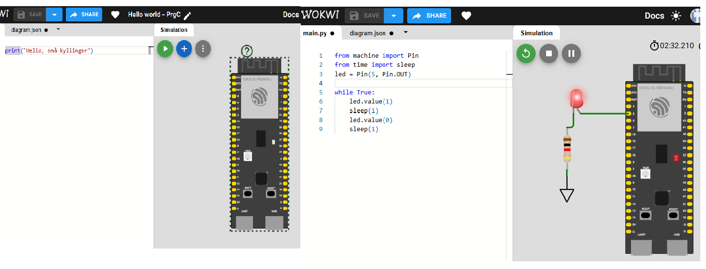
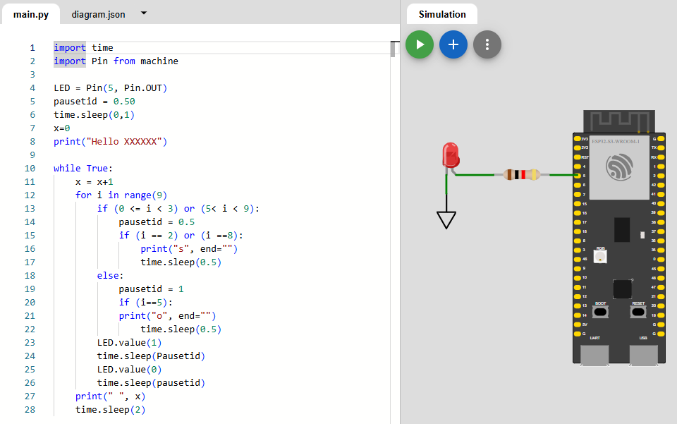
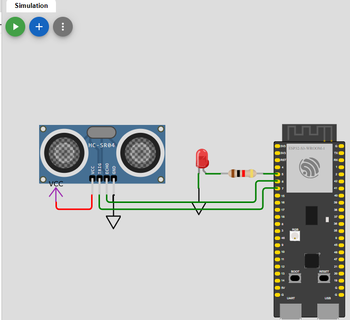
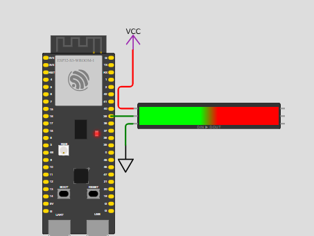

Opgaver i Python
Her er de stillede opgaver og programmeringsprojekter i micropython. Her mulighed for at hente eksempeler I kan bruge til at komme i gang med jeres egne projekter.
Projekt 1: Blinkende LED/"hello world"
Opgaven
Projekt 1 indeholder flere små opgaver, som skal introducere til programmering. Skriv et program, der får den indbyggede LED til at blinke og skriv til terminalen i Wokwi. Jo mere I leger med koden, jo mere lærer I.
Step 1: Skriv "Hello World" til terminalen.
Step 2: Få LED'en til at blinke.
Step 3: Få LED'en til at blinke hurtigere.
Step 4: Få LED'en til at blinke langsommere.
Step 5: Få LED'en til at blinke i et mønster eg. SOS med spagettigkode.
Step 6: Få LED'en til at blinke i et mønster eg. SOS med kontrolstrukturer for-loop og if-else
Hjælp til opgaven
Figur 1 viser et kredsløb med en ESP32, hvor den indbyggede LED er forbundet til pin 2. For at få LED'en til at blinke, kan du bruge følgende kode:
from machine import Pin
from time import sleep
led = Pin(5, Pin.OUT)
while True:
led.value(1)
sleep(1)
led.value(0)
sleep(1) 
Alternativ kode
from machine import Pin
from time import sleep
led = Pin("LED", Pin.OUT)
while True:
led.toggle()
sleep(1)Test
| Test | Forventning | Resultat |
|---|---|---|
| LED tænder | LED'en skal lyse | Virker |
| LED blinker | Skifter hvert sekund | Virker |
Hvad gik godt?
Skriv kort, hvad der virkede godt i projektet.
Hvad var svært?
Skriv kort om en fejl, udfordring eller noget, du skulle undersøge nærmere.
Hvad lærte jeg?
Skriv 2–4 linjer om det vigtigste, du lærte.Min refleksion
Det vigtigste, jeg har lært indtil nu, er ...
Næste gang vil jeg gerne blive bedre til ...
Aflevering: forbedring af læring"
I den foregående opgave har vi arbejdet med følgende emner: • Skrive tekst print(), • Hvad en streng (string) er, • Simpel tidsforsinkelse, • Python-kode indeholder fejl. • Import af bibliotek, • Styring af PIN på ESP32 board, • while() loop, • For loop, • Brug af variabel, • if-else
Kan I lave en eller flere opgaver der er sjovere, mere lærerige eller motiverende
Opgaven
I skal lave 1 eller 2 der træner de færdigheder, I har arbejdet med.
Step 1: Opstil krav til opgaven.
Step 2: Design/formuler opgaven.
Step 3: Løs opgaven i pseudo-kode.
Step 4: Løs opgaven i kode.
Step 5: Ret og vælg relevante tips og koseeksempler.
Step 6: lav opgave på papir
Step 7: Udlever opgaven til makker gruppen
Hvad gik godt?
Skriv kort, hvad der virkede godt i projektet.
Hvad var svært?
Skriv kort om en fejl, udfordring eller noget, du skulle undersøge nærmere.
Hvad lærte jeg?
Skriv 2–4 linjer om det vigtigste, du lærte.
Projekt 3: Find 5 fejl
Opgaven
I denne opgave skal I finde 5 fejl i koden og rette dem, så programmet virker.

Test
| Test | Forventning | Resultat |
|---|---|---|
| LED blinker s | LED'en skal lyse 3x hurtigt | ? |
| LED blinker o | LED'en skal lyse 3x langsomt | ? |
| LED blinker s | LED'en skal lyse 3x hurtigt | ? |
| print(S) | der skrives s til terminalen | ? |
| print(o) | der skrives o til terminalen | ? |
| print(S) | der skrives s til terminalen | ? |
| print(x) | der skrives x(sos nr.) til terminalen | ? |
Hvad gik godt?
Skriv kort, hvad der virkede godt i projektet.
Hvad var svært?
Skriv kort om en fejl, udfordring eller noget, du skulle undersøge nærmere.
Hvad lærte jeg?
Skriv 2–4 linjer om det vigtigste, du lærte.Min refleksion
Det vigtigste, jeg har lært indtil nu, er ...
Næste gang vil jeg gerne blive bedre til ...
Projekt 4: Ultrasonic Sensor
Opgaven
Her skal I lave et program der kan måle afstand med en Ultrasonic Sensor. Den ultrasoniske sensor sender ultralydspulser og måler tiden, det tager for pulsen at reflektere tilbage til sensoren. Ved at bruge hastigheden af lyd i luften kan sensoren beregne afstanden til objektet. Den ultrasoniske sensor har 4 ben: VCC, GND, TRIG og ECHO. VCC og GND forbindes til strømforsyningen, mens TRIG bruges til at sende ultralydspulser, og ECHO bruges til at modtage de reflekterede pulser.
Pseudokode til måling af afstand
Step 1: Sæt trigger pin lav i 2 mikrosekunder.
Step 2: Sæt trigger pin høj i 10 mikrosekunder.
Step 3: sæt trigger pin lav igen.
Step 4: registrer tiden for hvor ECHO pin er høj.
Step 5: beregn afstanden ved hjælp af tiden og hastigheden af lyd.
Step 6: print afstanden til terminalen.
Step 7: gentag målingen i en løkke.
step 8: tilføj en forsinkelse mellem målinger.
Step 9: tilføj en LED der lyser når afstanden er mindre end en bestemt værdi.
Dokumentation
Step 10: Kommentér koden og lav en testplan.

kode tips i random orden
import machine
from machine import Pin
from time import sleep
time.sleep_us(2)
duration = machine.time_pulse_us(Echo_pin, 1, 30000)
led = Pin("LED", Pin.OUT)
while True:
Test
| Test | Forventning | Resultat | Afvigelse |
|---|---|---|---|
| Afstand 1 m | 1m | ? | ? |
| Afstand 0.5 m | 0.5m | ? | ? |
Hvad gik godt?
Skriv kort, hvad der virkede godt i projektet.
Hvad var svært?
Skriv kort om en fejl, udfordring eller noget, du skulle undersøge nærmere.
Hvad lærte jeg?
Skriv 2–4 linjer om det vigtigste, du lærte.Projekt 5: Knap
Opgaven
Her skal I lave et lille program så I kan bruge en knap til at styre en LED.
Pseudokode til at styre en LED med en knap
Step 1: Initialiser knap og LED.
Step 2: Vent på, at knappen bliver trykket ned.
Step 3: Når knappen er trykket ned, tænd LED'en.
Step 4: Vent et stykke tid.
Step 5: Sluk LED'en.
Step 6: Gentag fra step 2.
Dokumentation
Step 10: Kommentér koden og lav en testplan.

kode tips i random orden
import time
import machine
from machine import Pin
knap = Pin(11, Pin.IN)
knapValue = knap.value()
if knapValue == 1:
else:
Hvad gik godt?
Skriv kort, hvad der virkede godt i projektet.
Hvad var svært?
Skriv kort om en fejl, udfordring eller noget, du skulle undersøge nærmere.
Hvad lærte jeg?
Skriv 2–4 linjer om det vigtigste, du lærte.Aflevering "Baksensor"
Opgaven
Her skal I ved hjælp af den viden I har opnået i de foregående opgaver, lave et program der kan bruges som baksensor.
Pseudokode til lave en baksensor med ultrasonisk sensor
Step 1: ?
Step 2: ?
Step 3: ?
Step 4: ?
Step 5: ?
Step 6: ?
Dokumentation
Step 10: Kommentér koden og lav en testplan.
Opgave "buzzer"
Kan I lave en buzzer der lyder når afstanden er mindre end en bestemt værdi.
Hvad gik godt?
Skriv kort, hvad der virkede godt i projektet.
Hvad var svært?
Skriv kort om en fejl, udfordring eller noget, du skulle undersøge nærmere.
Hvad lærte jeg?
Skriv 2–4 linjer om det vigtigste, du lærte.Lidt lir "Neopixels"
Opgaven
Her skal I lege med Neopixels. I kan bruge koden fra Wokwi projektet og ændre på den, så I kan få jeres egne farver og mønstre.
Dokumentation
Step 10: Kommentér koden og lav en testplan.

kode tips i random orden
from machine import Pin
import neopixel
from time import sleep
antal_led = 8
pin = 39
leds = neopixel.NeoPixel(Pin(pin), antal_led)
while True:
for i in range (antal_led):
leds[i] = (255, 0, 0)
# Send data til LED'erne
leds.write()
sleep(0.5)
Kan I evt. kombinere Neopixels med andre komponenter?
Skriv kort, hvad der virkede godt i projektet.